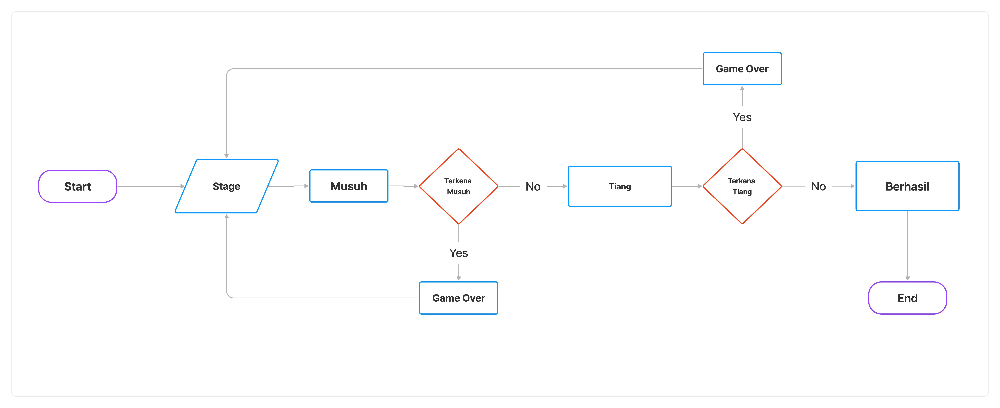

Tokoh utama dari game ini adalah kucing yang diberi nama Meng yang suka berpetualang di berbagai dunia untuk melawan monster yang jahat. Game “Super Meng Adventure” adalah permainan yang memungkinkan user untuk menjelajahi berbagai tingkat, melompati rintangan, mengumpulkan koin, dam mengalahkan monster hingga mencapai tujuan akhir setiap tingkatnya. Di setiap level permainan ini dirancang menyajikan tantangan yang semakin meningkat seiring user bergerak maju. Level-level ini berupa gua-gua, hutan, monster dll. Selama permainan, Meng dapat mengumpulkan koin untuk meningkatkan score, kemudian menghindari duri dan monster agar tidak game over. Selama perjalanan, Meng akan menghadapi monster jahat, dan setiap bos memiliki pola perilaku yang berbeda-beda dan cara mengalahkannya pun juga berbeda. Tujuan game ini adalah melewati dan mengalahkan setiap tantangan yang ada dalam game untuk mendapatkan score dan menuju ke level selanjutnya.
1. Pengenalan Karakter
Cerita dimulai dengan pengenalan karakter utama, "Meng", seekor kucing hidup di dunia fantasi yang penuh dengan elemen alam seperti api, air, angin, dan tanah.
2. Ancaman Terhadap Dunia
Pada suatu hari, dunia di mana Meng tinggal diserang oleh monster pemilik kekuatan jahat yang ingin menguasai elemen alam untuk keserakahan mereka sendiri.
3. Pertarungan Melawan Musuh
Selama petualangan, Meng akan berhadapan dengan berbagai macam musuh dan monster yang menghalangi jalannya. Dia harus menggunakan kekuatan elemen alamnya untuk mengalahkan mereka.
4. Pertempuran
Meng bersiap untuk pertempuran melawan kekuatan jahat untuk menyelamatkan dunia. Dalam pertempuran ini, Meng dihadapkan dengan musuh dalam stage (level).
Dalam stage 1 dan 2 Meng akan melawan monster kecil dengan tantangan adanya duri dibawah lantai game, jika meng tidak melompat maka meng akan mati sehingga menyebabkan game over.
Baik dalam stage 1 maupun 2, meng harus melewati blok untuk mendapatkan kemenangan. Selama melewati tantangan tersebut, meng dapat mengumpulkan koin yang digunakan untuk penambahan score.
Setelah berhasil meng akan menemukan bendera yang menandakan level telah berhasil dilalui.
5. Keselamatan Dunia
Dengan kekuatannya, Meng berhasil mengalahkan kekuatan jahat dari para musuh atau monster dan menyelamatkan dunia dari kehancuran. Meng berhasil melewati tantangan tanpa mengenai duri yang ada pada lantai game
6. Akhir Cerita Game
Cerita berakhir dengan Meng merayakan kemenangan mereka, mengumpulkan koin sehingga score bertambah, dan dunia kembali dalam kedamaian.
Flowchart Game
How to run
1.Game dimulai dengan menekan tombol keyboard up atau enter kemudian “Meng”
akan berlari.
2. Jika ada musuh muncul, tekan tombol keyboard up atau spasi untuk melewati musuh
tersebut sehingga meng akan melompat dan mendapatkan score.
3. Terdapat rintangan lain seperti adanya tiang atau pipa, untuk menghindarinya lakukan
hal yang sama ketika melewati musuh.
4. Jika “Meng” terkena musuh atau tantangan (pipa atau tiang) maka terjadilah game
over sehingga user harus memulai kembali game dari awal.